EvolvingDexterous robotsfromscratch
Abstract
Little is known about how to manually design agents capable of dexterous manipulation. Some design principles have been inferred from close examination of how animals manipulate objects, but these structures and behaviors have so far resisted biomimicry and may not be optimal for artificial machines.
Here we evolve freeform robots to pick up, hold, rotate, and use diverse objects. We do not presuppose the presence, articulation, or geometry of any part of the body. Winning designs were automatically converted into a manufacturable blueprint, printed, assembled and tested in the real world in a zero-shot manner.
01Motivation
Design robots automatically with minimal assumptions
A diversity of prehensile structures have evolved in animals to support effective object manipulation1. It may still be beneficial to mimic the evolutionary mechanisms responsible for the emergence, complexification, and diversification of nature's designs2.
The most relevant prior work presupposed the shape and articulation of each finger and locked their position in plane about a 2D palm3, or added an anthropomorphic design template4.
Here we show for the first time de novo manipulator design.
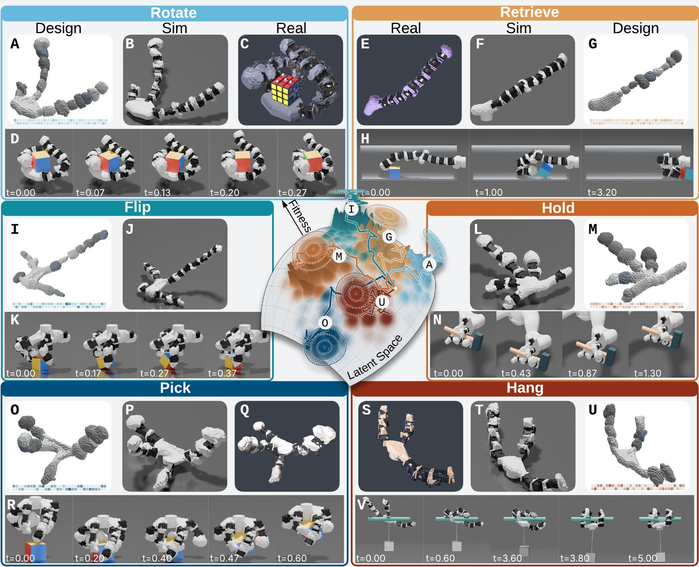
OverviewEvolving freeform manipulators. Under different selection pressures and environmental conditions, unique morphologies emerged to rotate, retrieve, flip, hold, pick up, and hang from objects.
02Framework
Embed, evolve, train, deploy
Embed Contrastive learning creates a highly searchable genetic embedding of design space.
Evolve Evolutionary strategies find good designs in that latent space.
Train Reinforcement learning trains each evolved design in simulation.
Deploy Winning designs are converted into a manufacturable blueprint5, printed, assembled and deployed zero-shot.
Unlike other approaches to optimizing robot hands, we do not presuppose the presence, articulation, or geometry of any part of the body.
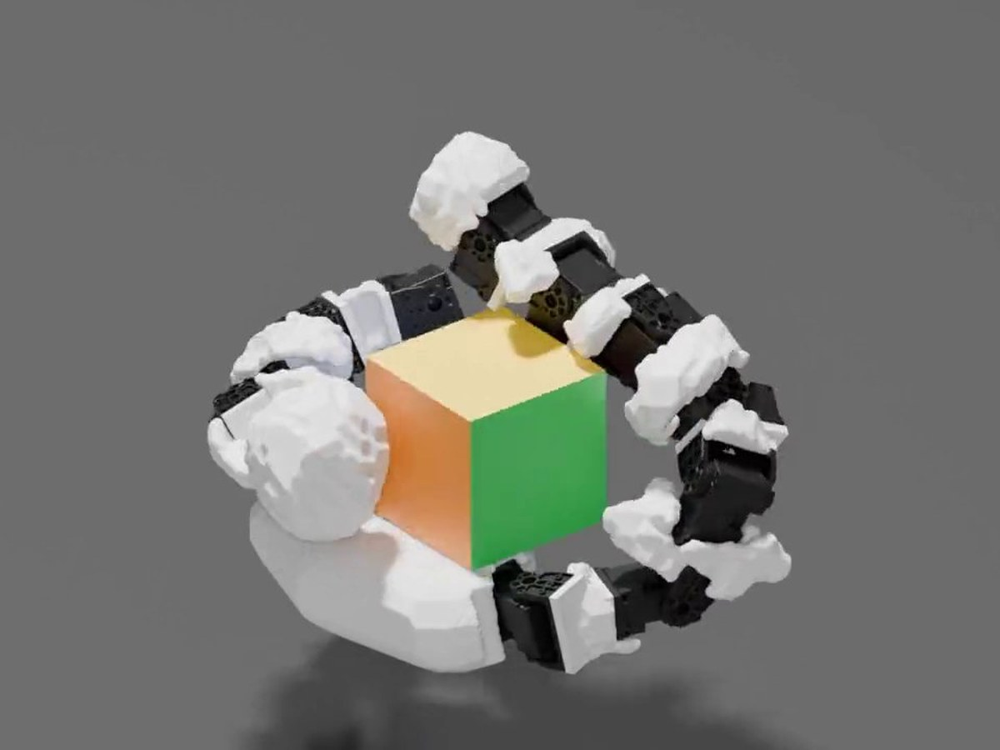
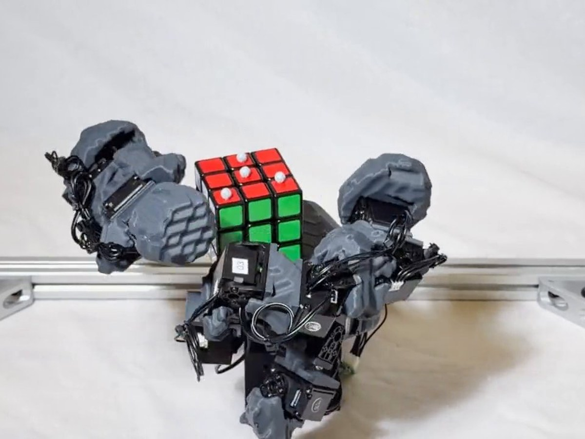
StagesOne image per stage. Top left, embed: the latent genome, in which similar body plans are genetically closer; top right, evolve: the trajectory across the latent space toward the highest fitness; bottom left, train: the didactyl rotator in simulation; bottom right, deploy: the same design printed and tested in the real world.
03Genome
The latent genome
The voxel grid was encoded by a 3D convolutional network6 and the kinematic tree by a graph network7, combined into a single latent vector z and normalized onto a hypersphere8.
Two million example body plans were generated. The contrastive term (NT-Xent loss9) brings each design and a morphologically similar counterpart, made by rescaling, reorienting, repositioning or slightly deforming it, closer together and farther away from other examples.
canonicalrotatedsame design
Latent spaceGenetic coherence. With the contrastive loss, rotated copies of ten thousand pentadactyl morphologies remain close to their originals in the UMAP11 projection (A-B); without it, the two views separate (C); in the VAE, rotated copies can appear far from their originals (D).
03Genome
Smoothness and coherence
In a test set of 2,000 unique body plans that were not used for training, every augmented copy and its original were nearest genetic neighbors (recall 100%); on a separate test set of 4,500 designs spanning 17 topologies, topology 10-NN accuracy was 92%.
Genetic distance from the original correlated with how many distal segments were amputated (edit-distance correlation ρ = 0.97); decoded designs had the expected number of appendages (appendage accuracy 100%) and joints (joint accuracy 96%), and stayed within the voxel grid with nonoverlapping appendages (validity 82%).
InterpolationGenetic interpolation between four evolved manipulators. Spherical linear interpolation (slerp) between a retriever (top left), a rotator (top right), a picker (bottom right), and a hanger (bottom left); the latent genotype below each decoded design is visualized as a double barcode.
04Decoder
The developmental decoder
Designs were parameterized by a root and up to five appendages that may grow outward from any point along the edge of the root, with up to 25 joints, 39 root variables and 12 variables per segment.
A design is written as a sequence of tokens: first the root, then each segment, one appendage after another, each variable cut into 8 to 128 bins by its sensitivity.
During body generation, a grammar masks erroneous tokens such that every body is decoded from a complete and valid set of morphological parameters.
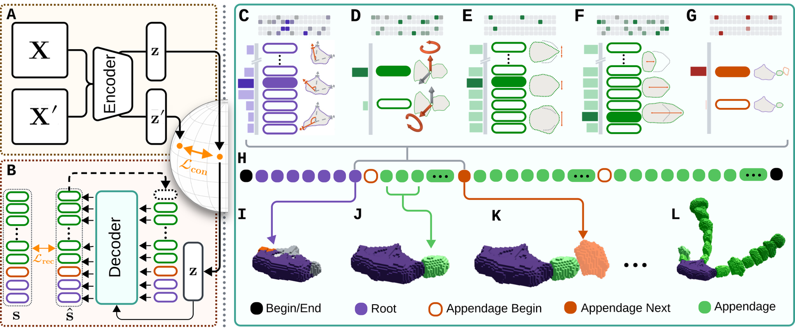
DecoderLatent genome and developmental decoder. Morphologies were embedded on a latent manifold (A) and autoregressively decoded back to morphospace (B) through a developmental program (C-G) that translates design tokens (H) into articulated bodies (I-L).
04Decoder
One body part after another
An autoregressive transformer16 conditioned on the latent genotype predicts the sequence one token at a time; a linear layer turns the latent genome z into eight vectors, and every layer of the transformer attends to them.
The developmental model grows one body part after another, ensuring validity at each step: the root first, then one appendage from the tip of each built spoke, a chain of segments that never branches.
begin
Design tokens 1 / 236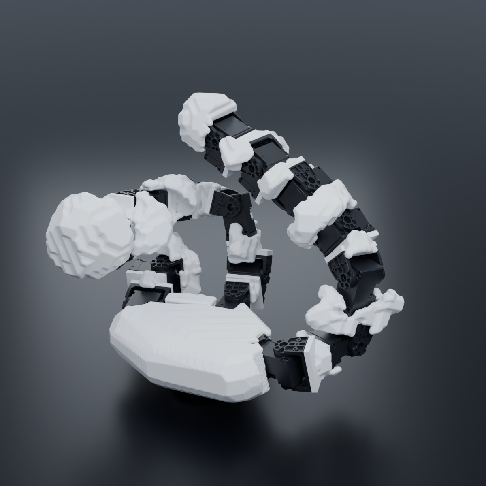
- root
- appendage
- appendage begin
- appendage next
- begin / end
05Evolution
Evolve, then train each design
Following prior work13, robots are designed by CMA-ES17,18 in the latent space, with a population size of 32 and an initial step size of 0.25; every sample is projected onto the sphere before decoding.
A control policy is then trained from scratch for each design with PPO19 in Isaac Lab20 across thousands of parallel environments.
After training, the optimized policy is replayed without exploration noise for a fixed window, and fitness is the average reward achieved across environments.
EvolutionThe evolution of rotators. The best of the five evolutionary trials of the rotate task, population size 32 over the first 75 generations: every sampled genotype in the latent space, the distribution mean moving across it, and the peak fitness so far during evolution against the anthropomorphic baseline21 and the prior state-of-the-art3.
05Evolution
Print, assemble, deploy zero-shot
Each design is converted into a manufacturable form5: a printable mesh22, servos at every joint, cavities for each motor and bracket, and a self-collision sweep of every joint that sets its limit.
Body parts are 3D-printed in PLA and the servos are attached by screws into heat inserts. The policy is distilled into a proprioceptive controller, finetuned under domain randomization23, and deployed zero-shot at 30 Hz.
Winning designs were fabricated directly from their automatically generated blueprints.
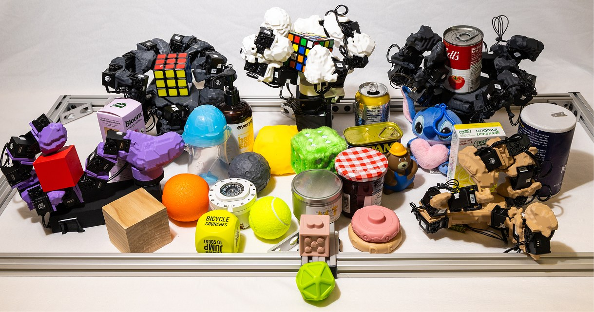
PrintedThe five physical designs. From left to right: the retriever (purple), the didactyl rotator (grey), the picker (white), the 4-appendage rotator (grey) and the hanger (tan).
06Results
Rotate
Five evolutionary trials were compared against the anthropomorphic LEAP hand21 and the manipulators that until now represented the state of the art3.
After finetuning, the didactyl robot rotated objects at 3.66 rad/s in simulation, compared to 2.09 rad/s on the anthropomorphic hand21 and the 3.3 rad/s reported3 using privileged information.
Deployed zero-shot, it rotated unseen objects at 1.39 rad/s, almost twice the 0.74 rad/s reported until now3; the tetradactyl robot rotated the five cubes at 1.78 rad/s on average.
Fitness was the net rotation rate of the object over a 30 second evaluation period.
RotateThe evolved didactyl rotator. Two functional appendages and a third, very short vestigial appendage that did not contribute to object rotation.
06Results
Pick
Robots were mounted above a tabletop with their root facing downward and evolved to pick up objects. A single evolutionary trial was conducted; the winning design picked up and held onto objects 99% of the time.
Deployed zero-shot across 24 previously unseen objects, it succeeded in eight out of ten attempts on average, and picked up every object at least once except the heaviest, a 687 g salt container.
Highly fit robots pick the object and keep it from falling under external perturbations.
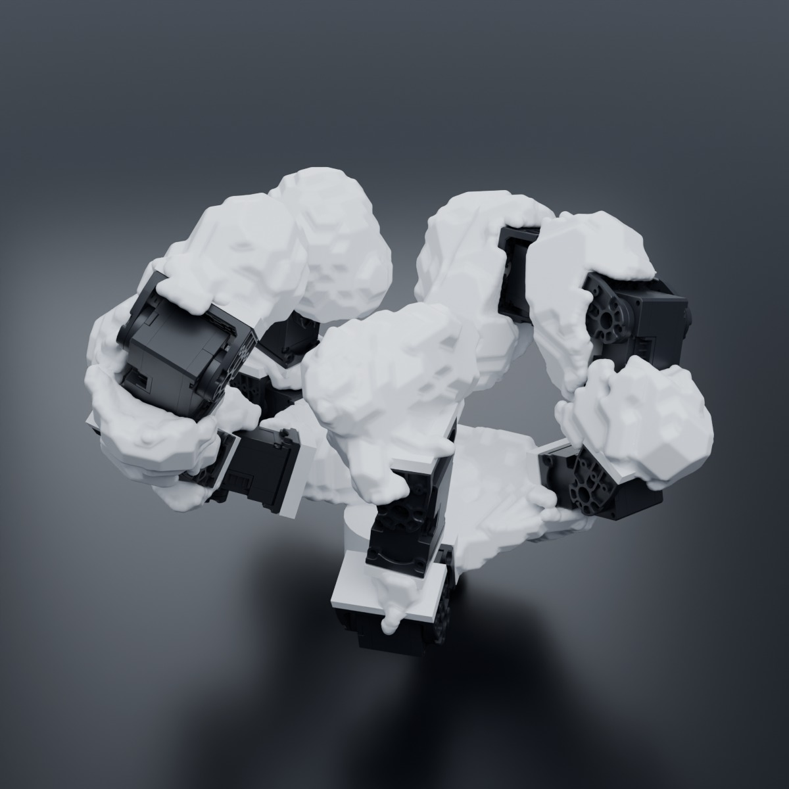
PickAn evolved picker. Evolved, trained, and realized to pick objects off a surface.
06Results
Hang
Robots were positioned near a horizontal bar and evolved to wrap around it such that, when released, the body hangs with a 500 g weight suspended below it.
The winning design held on for the entire 20 second evaluation period in 99.9% of training episodes, using half the torque of the best designs found earlier in evolution. Deployed zero-shot, it gripped and hung from a bar under a 500 g load.
Fitness was based on how long the robot stayed on the bar, discounted by the motor torque expended.
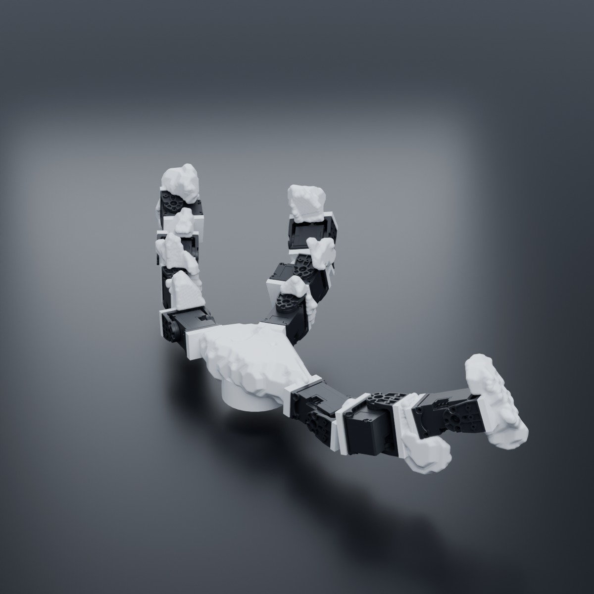
HangAn evolved hanger. Evolved, trained, and realized to hang from a horizontal bar with a weight suspended below.
06Results
Retrieve
Robots were mounted at the opening of a narrow horizontal pipe containing a small cube and evolved to reach into the pipe and pull the cube out.
The winning design, which was successful in every training episode, was realized, finetuned, and deployed zero-shot. It was equally successful in reality.
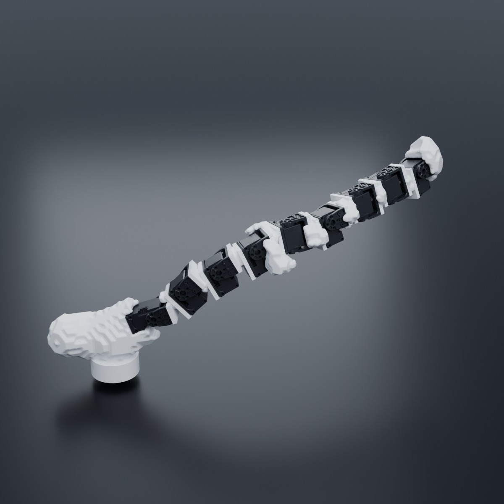
RetrieveAn evolved retriever. Evolved, trained, and realized to retrieve objects from within a narrow pipe.
06Results
Flip
Robots were mounted above a table and evolved to flip a cube over, again and again, in a randomly chosen direction, as quickly as possible. Each flip moves the cube one edge length along the table, so the mounted robot must also pull the cube back within reach to keep flipping it.
The winning design achieved 7.75 full rotations in 60 seconds.
Fitness was the number of full rotations of the cube over a 60 second evaluation period.
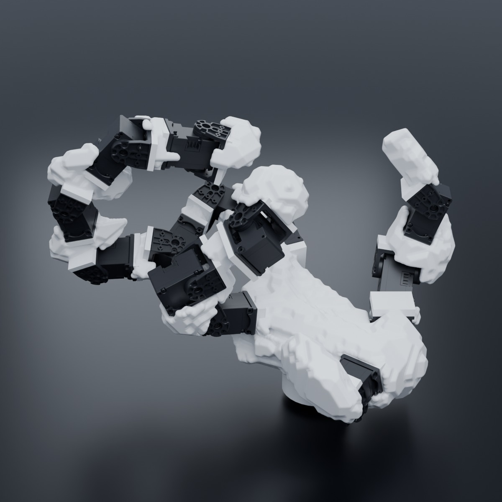
FlipEvolved to flip. A unique morphology emerged to flip a cube over, again and again, in a randomly chosen direction.
06Results
Hold
The manipulator was mounted on the end of an arm and evolved to hold a hammer by its handle as the arm swings the hammer up and down.
The winning design dropped the hammer in just 3% of episodes. It was the only winning design with a pentadactyl morphology that evolved across the six task environments.
Fitness was how little the hammer moved relative to its mounted root during arm swinging and under external perturbations.
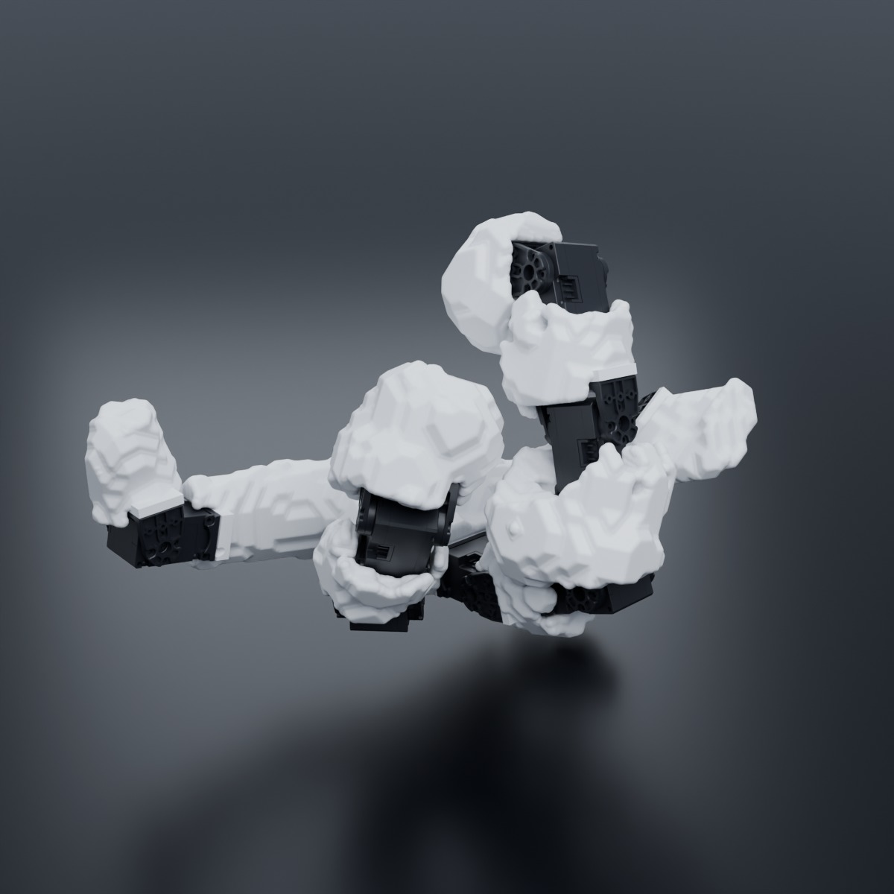
HoldEvolved to hold. A unique morphology emerged to hold a hammer by its handle as the arm swings the hammer up and down.
06Results
Multitasking
Finally, manipulators were evolved to perform five of the six tasks (all but retrieve).
Early in evolution, the best design had mastered rotation, flipping and hanging. Later it evolved the ability to pick and hold objects, but got worse at rotating them.
The selected generalist dropped the hammer in one episode in five, and rotated objects at a quarter of the rate of the rotate specialist.
The winning design flipped and hung as well as the specialists, and lifted almost every object but held on under the pulling force for only a quarter of the evaluation window; it rotated objects slowly and dropped the hammer.
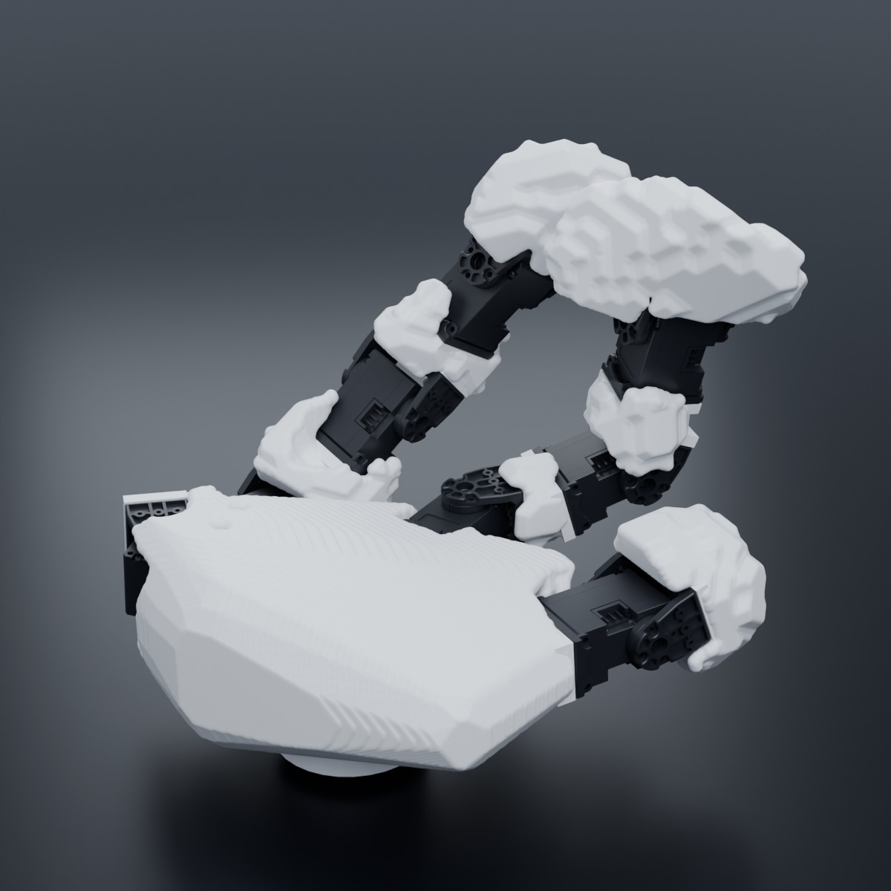
MultitaskAn evolved multitasker. The winning design could flip, pick up, and hang from objects in simulation; it rotated objects slowly.
07Real world
Zero-shot in the real world
Deployed zero-shot in the real world, the didactyl robot rotated previously unseen objects weighing from 16 to 687 g at 1.39 rad/s on average, almost twice as fast as the best design previously reported3, which achieved 0.74 rad/s; the tetradactyl robot rotated the five cubes at 1.78 rad/s on average.
Every joint is driven by a Dynamixel XL330-M288-T servo, running its built-in position controller at 30 Hz.
The didactyl design rotated every object, at 1.39 rad/s on average, and sustained rotation for the full 30 seconds on 11 of them.
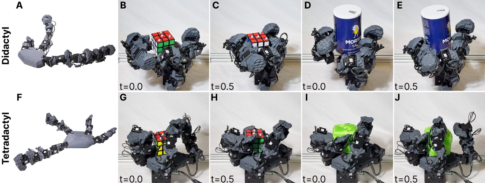
RotatorsTwo evolved rotators. The best was essentially didactyl (A-E), with two functional appendages and a third, very short vestigial appendage; another highly fit design was tetradactyl (F-J), and all four of its appendages were utilized.
07Real world
Compared against the anthropomorphic baseline
Even with a specialized policy trained to rotate a cube, the hand21 was no better than the evolved designs at rotating cubes.
That policy rotated the cubes and three other objects, at 0.51 rad/s on average, a third of the speed of the didactyl design.
After the same training process, the anthropomorphic hand21 failed to rotate any of the previously unseen test objects.
RealThe didactyl rotator (left) and the anthropomorphic hand21 (right). Both were deployed zero-shot after the same training process, on previously unseen objects.
07Real world
Pick, hang, retrieve in reality
Across 24 previously unseen objects, the picker succeeded in eight out of ten attempts on average, and picked up every object at least once except the heaviest, a 687 g salt container.
Deployed zero-shot with a finetuned policy, the hanger gripped a stationary bar and hung from it under a 500 g load. The retriever, successful in every training episode, was equally successful in reality.
RealThe hanger (left) and the retriever (right). The hanger gripped a stationary bar and hung from it under a 500 g load; the retriever reaches into the pipe and pulls the cube out.
08Discussion
More dexterous, more evolvable, still limited
The resulting robots were more dexterous than state-of-the-art baselines with a more restrictive design space3 or an anthropomorphic layout21. This genetic representation significantly increased evolvability beyond the best known alternative, a VAE14.
The design space was limited to one material, one mode of actuation and proprioception; evolution and learning were conducted entirely in simulation; the behaviors were cognitively simple; and the robots were sessile.
The dexterous robots in this paper were not limited by human preconceptions about what a manipulator should look like.
09References
References
- 1Shoko Sugasawa, Barbara Webb, and Susan D Healy. Object manipulation without hands. Proceedings of the Royal Society B: Biological Sciences, 2021.
- 2Stefano Nolfi and Dario Floreano. Synthesis of autonomous robots through evolution. Trends in Cognitive Sciences, 2002.
- 3Kehlani Fay, Darin Anthony Djapri, Anya Zorin, James Clinton, Ali El Lahib, Hao Su, Michael T. Tolley, Sha Yi, and Xiaolong Wang. House Of Dextra: Cross-Embodied Co-Design for Dexterous Hands. Proceedings of the International Conference on Learning Representations (ICLR), 2026.
- 4Mohammad Amin Mirzaee, Harsh Gupta, and Wenzhen Yuan. Function-based Parametric Co-Design Optimization of Dexterous Hands. arXiv preprint arXiv:2604.27557, 2026.
- 5Zihan Guo, Muhan Li, Shuzhe Zhang, and Sam Kriegman. Creating manufacturable blueprints for coarse-grained virtual robots. arXiv preprint arXiv:2603.13582, 2026.
- 6Daniel Maturana and Sebastian Scherer. Voxnet: A 3D convolutional neural network for real-time object recognition. Proceedings of the International Conference on Intelligent Robots and Systems (IROS), 2015.
- 7Zhitao Ying, Jiaxuan You, Christopher Morris, Xiang Ren, Will Hamilton, and Jure Leskovec. Hierarchical graph representation learning with differentiable pooling. Advances in Neural Information Processing Systems (NeurIPS), 2018.
- 8Tongzhou Wang and Phillip Isola. Understanding Contrastive Representation Learning through Alignment and Uniformity on the Hypersphere. Proceedings of the International Conference on Machine Learning (ICML), 2020.
- 9Ting Chen, Simon Kornblith, Mohammad Norouzi, and Geoffrey Hinton. A Simple Framework for Contrastive Learning of Visual Representations. Proceedings of the International Conference on Machine Learning (ICML), 2020.
- 10Kathryn E Kirchoff, Travis Maxfield, Alexander Tropsha, and Shawn M Gomez. SALSA: Semantically-aware latent space autoencoder. Proceedings of the AAAI Conference on Artificial Intelligence, 2024.
- 11John Healy and Leland McInnes. Uniform manifold approximation and projection. Nature Reviews Methods Primers, 2024.
- 12Jiaheng Hu, Julian Whitman, and Howie Choset. GLSO: Grammar-guided latent space optimization for sample-efficient robot design automation. Proceedings of the Conference on Robot Learning (CoRL), 2023.
- 13Muhan Li, Lingji Kong, and Sam Kriegman. Generating Freeform Endoskeletal Robots. Proceedings of the International Conference on Learning Representations (ICLR), 2025.
- 14Kevin J Mitchell and Nick Cheney. The genomic code: The genome instantiates a generative model of the organism. Trends in Genetics, 2025.
- 15Chen Yu, David Matthews, Jingxian Wang, Jing Gu, Douglas Blackiston, Michael Rubenstein, and Sam Kriegman. Agile legged locomotion in reconfigurable modular robots. Proceedings of the National Academy of Sciences, 2026.
- 16Ashish Vaswani, Noam Shazeer, Niki Parmar, Jakob Uszkoreit, Llion Jones, Aidan N Gomez, ukasz Kaiser, and Illia Polosukhin. Attention is all you need. Advances in Neural Information Processing Systems (NeurIPS), 2017.
- 17Nikolaus Hansen and Andreas Ostermeier. Completely derandomized self-adaptation in evolution strategies. Evolutionary Computation, 2001.
- 18Nikolaus Hansen. The CMA evolution strategy: A tutorial. arXiv preprint arXiv:1604.00772, 2016.
- 19John Schulman, Filip Wolski, Prafulla Dhariwal, Alec Radford, and Oleg Klimov. Proximal policy optimization algorithms. arXiv preprint arXiv:1707.06347, 2017.
- 20Mayank Mittal, Pascal Roth, James Tigue, Antoine Richard, Octi Zhang, Peter Du, Antonio Serrano-Munoz, Xinjie Yao, René Zurbrügg, Nikita Rudin, et al. Isaac lab: A gpu-accelerated simulation framework for multi-modal robot learning. arXiv preprint arXiv:2511.04831, 2025.
- 21Kenneth Shaw, Ananye Agarwal, and Deepak Pathak. LEAP Hand: Low-Cost, Efficient, and Anthropomorphic Hand for Robot Learning. Robotics: Science and Systems (RSS), 2023.
- 22William E Lorensen and Harvey E Cline. Marching cubes: A high resolution 3D surface construction algorithm. Computer Graphics, 1987.
- 23Marcin Andrychowicz, Bowen Baker, Maciek Chociej, Rafal Jozefowicz, Bob McGrew, Jakub Pachocki, Arthur Petron, Matthias Plappert, Glenn Powell, Alex Ray, et al. Learning dexterous in-hand manipulation. The International Journal of Robotics Research, 2020.